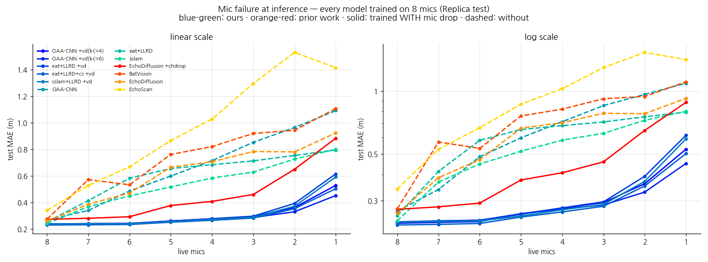

<title>Echo-Depth와 오디오 파운데이션 모델</title>
<link rel="stylesheet" href="https://fonts.googleapis.com/css2?family=Noto+Sans+KR:wght@400;500;700&family=Noto+Serif+KR:wght@400;600&family=IBM+Plex+Mono:wght@400;500&display=swap">
<style>
:root{--bg:#faf9f6;--ink:#22201c;--sub:#6b675f;--line:#e3ded4;--accent:#2e7d5b;--accent2:#b8544f;
      --card:#ffffff;--code:#f1efe9;--win:#e4f2ea;--lose:#f7e8e6}
@media (prefers-color-scheme: dark){:root:not([data-theme="light"]){--bg:#191817;--ink:#e8e5df;--sub:#a29d93;
  --line:#3a3833;--accent:#5fb890;--accent2:#d98a85;--card:#211f1d;--code:#26241f;--win:#1e3529;--lose:#3a2523}}
:root[data-theme="dark"]{--bg:#191817;--ink:#e8e5df;--sub:#a29d93;--line:#3a3833;--accent:#5fb890;
  --accent2:#d98a85;--card:#211f1d;--code:#26241f;--win:#1e3529;--lose:#3a2523}
body{background:var(--bg);color:var(--ink);font-family:'Noto Sans KR',system-ui,sans-serif;
     line-height:1.78;margin:0;padding:0 20px 90px}
main{max-width:820px;margin:0 auto}
h1{font-size:1.8rem;font-weight:700;margin:52px 0 6px;line-height:1.35;text-wrap:balance}
.sub{color:var(--sub);margin:0 0 34px;font-size:.94rem}
h2{font-size:1.28rem;margin:52px 0 14px;padding-top:20px;border-top:1px solid var(--line)}
h3{font-size:1.04rem;margin:30px 0 8px;color:var(--accent)}
p{max-width:72ch;margin:0 0 14px}
b.g{color:var(--accent)} 
.key{background:var(--card);border:1px solid var(--line);border-left:4px solid var(--accent);
     border-radius:6px;padding:16px 20px;margin:20px 0}
figure{margin:24px 0;overflow-x:auto}
figure img{max-width:100%;border:1px solid var(--line);border-radius:6px;background:#fff}
figcaption{color:var(--sub);font-size:.86rem;margin-top:8px;max-width:76ch;line-height:1.6}
.tw{overflow-x:auto}
table{border-collapse:collapse;font-size:.87rem;margin:14px 0;font-variant-numeric:tabular-nums}
th,td{border:1px solid var(--line);padding:5px 10px;text-align:right}
th{background:var(--code);font-weight:500}
td:first-child,th:first-child{text-align:left}
.w{background:var(--win)} .l{background:var(--lose)}
code{font-family:'IBM Plex Mono',monospace;font-size:.86em;background:var(--code);padding:1px 5px;border-radius:4px}
dl{font-size:.93rem;border:1px solid var(--line);border-radius:6px;padding:12px 18px;background:var(--card)}
dt{font-weight:600;color:var(--accent);display:inline}
dd{display:inline;margin:0}
dl div{margin:4px 0}
</style>
<main>
<h1>Generic 오디오 사전학습은 왜 에코 기반 기하 추정으로 전이되는가</h1>
<p class="sub">HEAR-360 인코더 교체 캠페인 보고서 · 2026-08-20 ~ 09-09 · 학습 ~95회(외부 기준선 beyond 8런 진행 중), 분석 실험 10종 · <code>hear360/0820_*</code></p>

<h2>1. 서론: 무엇을 주장하고, 무엇을 주장하지 않는가</h2>
<p>이 보고서는 하나의 교체 실험에서 출발한다. 소리의 메아리로 360° 깊이 지도를 복원하는 과제(HEAR-360)에서, 논문의 task-specific CNN 인코더를 범용 오디오 파운데이션 모델(AFM)로 바꾸면 무슨 일이 일어나는가. 상식적인 회의는 두 방향에서 가능하다. 한편으로 AudioSet은 유튜브의 일반 소리로 이루어진 데이터이므로, 그것으로 배운 표현이 "몇 밀리초에 메아리가 도착했는가"라는 기하학적 신호를 도울 이유가 없어 보인다. 다른 한편으로 86M짜리 사전학습 트랜스포머가 15M짜리 스크래치 CNN을 이기는 것은 당연해 보이기도 한다. 이 캠페인의 결과는 두 직관 모두를 기각한다: 아무 AFM이나 붙이면 오히려 CNN보다 나빠지며(§5), 그럼에도 특정한 사전학습 방식을 가진 모델은 올바른 미세조정과 결합될 때 대부분의 평가 조건에서 CNN과 동등하거나 그 이상이 된다(§3).</p>
<p>우리가 주장하는 것은 세 가지다. 첫째, <b>엄격한 동률 규칙(시드 평균 격차 0.01 미만 = 동률) 아래 칸 수준의 결산은 명확한 구조를 갖는다: AFM이 세 칸 — 관측이 희소한 2ch 두 칸과 어려운 데이터의 MP3D 4ch — 에서 규칙상 이기고, CNN이 한 칸 — 관측이 충분하고 데이터가 어지러운 MP3D 6ch, 모든 AFM 계열이 지는 유일한 칸 — 에서 이기며, 나머지 네 칸은 동률이다</b> — 그리고 MAE가 동률인 칸에서도 그 내부는 중립이 아니어서, 근거리 정밀은 CNN이, 원거리 오차와 RMSE의 억제는 AFM이 가져가는 체계적 교환이 반복된다(§3). 둘째, 어느 AFM이 잘 되는지는 임의적이지 않다 — <b>사전학습 formulation과 전이 성능 사이에 강하고 해석 가능한 경향</b>이 있으며, 소리의 중첩을 다루도록 학습된 모델(SSLAM)이 정점에 선다. 셋째, 이 이득의 작동 방식을 test-time 조작 실험으로 추적한 결과, <b>CNN의 판독은 초기·국소 단서에 집중되어 있는 반면 SSLAM은 그에 더해 늦은 잔향 구간에 분산된 정보를 활용한다</b>는 그림이 여러 독립 조작에서 일관되게 지지된다.</p>
<p>동시에 우리가 주장하지 않는 것을 분명히 해 둔다. "사전학습 목적함수가 성능을 결정한다"고 말하지 않는다 — 공개 체크포인트들은 목적함수 외의 세부 레시피도 다르므로, 인과 확정에는 목적함수만 바꾼 통제 사전학습이 필요하다(§8). "SSLAM은 첫 메아리를 쓰지 않는다"고도 말하지 않는다 — 증거가 지지하는 것은 배타가 아니라 추가 활용이다(§7). 그리고 시드 간 분산이 ±0.005~0.012에 이르므로, <b>평균 격차 0.01 미만의 비교는 승패가 아니라 동률로 처리</b>한다는 판정 규칙을 본문 전체에 일관되게 적용한다.</p>

<h2>2. 과제, 모델, 그리고 판정 규칙</h2>
<p>과제를 구체적으로 그려 두는 것이 이후의 모든 논증에 필요하다. 로봇 리그가 처프를 방출하고, 리그에 부착된 마이크 2·4·6·8개가 각각 58ms 동안 반사음을 녹음한다. 소리가 1m를 왕복하는 데 약 5.8ms가 걸리므로 녹음의 시간축은 곧 거리축이다: 3m 벽의 1차 반사는 17ms 부근, 8m 벽은 47ms 부근에 도착한다. 중요한 것은 녹음의 뒷부분이 단일한 성분이 아니라는 점이다 — 거기에는 먼 표면의 1차 반사와, 가까운 표면들 사이를 여러 번 튕겨 늦게 도착한 다중 반사가 겹쳐 있다. 창은 왕복 10m에서 잘리므로, 룸어쿠스틱에서 말하는 수백 ms짜리 확산 잔향은 어떤 모델도 보지 못한다. 이 사실은 §7의 해석에서 중요해진다.</p>
<p>기준 모델(OAA-CNN)은 마이크별 스펙트로그램을 작은 CNN으로 인코딩한 뒤 마이크의 위치·방향을 아는 기하 attention으로 통합한다. 본 캠페인은 이 구조에서 <b>마이크별 인코더 하나만</b> ViT-B/16 AFM으로 교체하고 — 통합부·디코더·손실·학습 레시피는 전부 고정한다. 성능 차이를 인코더 하나에 귀속시키기 위한 설계다. 평가는 전부 test 세트로 하며(val과 test의 순위가 박빙 구간에서 절반꼴로 뒤집히는 것을 반복 관측했기 때문), 격차가 작은 비교는 시드 2~3개의 평균으로 판정한다.</p>
<dl>
<div><dt>r2/fb/r6/r8</dt> — <dd>마이크 2/4/6/8개 구성.</dd></div>
<div><dt>MAE·near·mid·far</dt> — <dd>평균 절대 오차(m)와, 정답 깊이 3m 미만 / 3–6m / 6m 초과 픽셀에서의 대역별 오차.</dd></div>
<div><dt>LLRD</dt> — <dd>층별 학습률 감쇠(0.75). 사전학습 모델의 아래층은 거의 고정(2e-6), 위층만 적응(5e-5).</dd></div>
<div><dt>vdrop</dt> — <dd>학습 중 일부 마이크 입력을 무작위로 0으로 만드는 정규화.</dd></div>
<div><dt>비교 기준선</dt> — <dd>논문 OAA-CNN(15M) 외에 EchoDiffusion(동결 오디오 백본 + 디퓨전 디코더), Beyond-Image-to-Depth(Parida et al., CVPR'21; ITD 계열 4-분기 어텐션 318M의 오디오 전용 포트, 8칸 학습 중).</dd></div>
<div><dt>판정 규칙</dt> — <dd>test 기준, 시드 평균 격차 ≥0.01일 때만 승패, 미만은 방향과 무관하게 동률(tie). 2026-09-08에 전 칸을 이 규칙으로 재감사해 0.01 미만의 과거 "승" 라벨을 전부 동률로 강등했다.</dd></div>
</dl>

<h2>3. 결과 I — 판정 매트릭스와 그 내부 구조</h2>
<p>여덟 개의 평가 칸(채널 4 × 데이터셋 2)에 판정 규칙을 기계적으로 적용한 결과가 아래 표다. 가족별 스코어카드로 먼저 요약한다. <b>기본 sslam: 2승 3동률 2패</b>(완주) — Replica 2ch(0.2711, Δ0.0183)와 MP3D 2ch(0.8965, Δ0.0119)에서 규칙상으로 이기지만, MP3D 6ch(0.8724, Δ−0.122)과 MP3D 8ch(0.9782, Δ−0.232)에서 크게 진다. 이 패는 §5의 법칙이 예고한 것이다: LLRD 없는 기본 레시피는 MP3D에서 원래 불리하며(4ch에서도 0.8335), 그럼에도 기록의 일관성을 위해 패로 기입한다. <b>통일세팅 sslam+LLRD: 0승 6동률 2패</b>(MP3D 8ch 재시도로 확인 중) — 유일한 승이던 MP3D 4ch(llrd65 0.7714)가 시드 2 도착으로 평균 0.7803±0.009의 동률로 강등됐고(각주 ⁴), Replica 네 칸은 전부 동률(그중 8ch은 0.2363으로 캠페인 최고), MP3D 6ch(0.7848, Δ−0.0346)은 규칙상 패다. 이 칸들의 규칙상 승은 eat+LLRD와 conv stem 변형이 지킨다. <b>eat+LLRD: 2승 5동률 1패</b> — Replica 2ch와 MP3D 4ch에서 이기지만, MP3D 6ch(0.7736, Δ−0.0234)는 캠페인 유일의 규칙상 패다. 여기에 conv stem을 더한 변형(eat+LLRD+cs)은 세 칸에서 규칙상 승을 추가하고(MP3D 4ch 0.7617·MP3D 2ch 0.8884 — 두 신기록, Replica 2ch 0.2754), Replica 8ch에서는 0.2291로 규칙상 동률이되 캠페인 셀 신기록을 세운다(근거리 0.1224까지 CNN 0.1250보다 낮은 전면 우세 방향) — 진입한 여덟 칸 중 패는 MP3D 6ch뿐, 실패는 Rep 4ch뿐으로, 단일 변형으로는 캠페인 최강이다. <b>EchoDiffusion: 0승</b> — 완주 8칸 전부에서 열세이고 다수가 규칙상 패다. 요컨대 어떤 단일 AFM 세팅도 전 칸 무패에는 도달하지 못했고, 정확한 문장은 칸 수준에서 완성된다: <b>"AFM은 관측이 희소한 2ch 두 칸과 어려운 데이터의 MP3D 4ch에서 이기고, CNN은 관측이 충분하고 데이터가 어지러운 MP3D 6ch 한 칸 — eat+LLRD, sslam+LLRD, 기본 sslam이 모두 지는 칸 — 을 방어하며, 나머지 네 칸은 동률로 수렴한다."</b></p>
<div class="tw"><table>
<tr><th>test MAE (m)</th><th>Rep 2ch</th><th>Rep 4ch</th><th>Rep 6ch</th><th>Rep 8ch</th><th>MP3D 2ch</th><th>MP3D 4ch</th><th>MP3D 6ch</th><th>MP3D 8ch</th></tr>
<tr><td>OAA-CNN (논문)</td><td>0.2894</td><td>0.2596</td><td>0.2384</td><td>0.2368</td><td>0.9084</td><td>0.7849</td><td class="w">0.7502</td><td>0.7467</td></tr>
<tr><td>eat+LLRD</td><td class="w">0.2762</td><td>0.2609</td><td>0.2427</td><td>0.2371¹</td><td>0.9018</td><td class="w">0.7717±.002</td><td>0.7736</td><td>0.7395±.011</td></tr>
<tr><td>sslam(+LLRD)</td><td class="w">0.2711</td><td>0.2659±.012² (tie)</td><td>0.2336±.005 (tie)</td><td>0.2363/0.2368³ (tie)</td><td class="w">0.8965⁵</td><td>0.7803±.009⁴</td><td class="l">0.7848</td><td class="l">0.9861⁶</td></tr>
<tr><td>EchoDiffusion</td><td>0.2854</td><td>0.2695</td><td>0.2556</td><td>0.2600</td><td>0.9007</td><td>0.7928</td><td>0.7786</td><td>0.7572</td></tr>
<tr><td>Beyond-I2D (ITD 계열)</td><td class="l">0.3150</td><td class="l">0.3125</td><td class="l">0.2982</td><td class="l">0.2981</td><td>학습중</td><td>학습중</td><td>학습중</td><td>학습중</td></tr>
</table></div>
<p style="font-size:.88rem;color:var(--sub)">¹Rep 8ch만 vdrop(§5). ²시드 3개(0.2553/0.2636/0.2789) 평균 0.2659±0.012 vs CNN 0.2596 — 격차 +0.006 < 0.01로 동률(방향은 CNN 우세 쪽); sslam의 fb 시드 분산이 유난히 큼. ³vdrop 판: 기본레시피 0.2368(CNN과 정확 동률), 통일레시피(+LLRD) 0.2363 — 한동안 r8 최고였고(현 셀 신기록은 conv stem 변형 0.2291) RMSE·mid·far 전 지표 CNN 우위(MAE 격차 0.0005는 규칙상 동률). r2/r6에서 보이던 LLRD의 Replica 비용이 r8에서는 사라진다. vdrop 없는 판 0.2399. ⁴LLRD 감쇠 0.65: s0 0.7714의 단독 승이었으나 s2 0.7892가 도착해 시드 평균 0.7803±0.009, 격차 0.0046으로 동률(방향 우세)로 강등 — Replica 4ch에서 배운 시드 행운 패턴의 재현이며, 심판 시드 s1(첫 투입은 OOM 즉사)이 재학습 중이다. 이 칸의 규칙상 승 자체는 eat+LLRD(시드 3개 0.7717±0.002)와 conv stem 변형(0.7617)이 독립적으로 유지한다. ⁵기본레시피 sslam 0.8965(Δ0.0119, 규칙상 승); 통일레시피(+LLRD) 0.8991은 Δ0.0093으로 동률(방향 우세). ⁶처음에는 시드 0의 학습 붕괴로 진단하고 판정을 유보했으나, 이후 <b>철회</b>한다: 기본 sslam 판(0.9782)과 시드 1 재시도가 모두 동일한 ~1.10 val 바닥에 걸렸다. 세 독립 런(레시피 2 × 시드 2)이 같은 지점에서 멈추므로 시드 잡음이 아니라 이 칸의 체계적 실패다. 초록 = 판정 규칙상 승(시드 평균 격차 ≥0.01). 격차 0.01 미만은 방향과 무관하게 전부 동률이며, r6 Replica·r8 MP3D처럼 방향이 일관되게 AFM 우세인 동률은 본문에 그렇게 명기한다.</p>
<figure><figcaption><b>그림 1.</b> 채널 수에 따른 test MAE. 모든 모델이 관측이 늘수록 좋아지지만 기울기가 다르며, 이 기울기의 차이가 §4의 주제다. sslam의 MP3D 6/8ch 점은 학습 중이라 비어 있다.</figcaption></figure>
<h3>채널을 따라 읽기</h3>
<p>관측 두 개(2ch)는 삼각측량이 성립하지 않는 구성이고, 여기서 AFM의 이득이 가장 크고 가장 확실하다 — 두 데이터셋 모두 규칙상 승이며, MP3D에서는 세 AFM 판(0.8965/0.8991/0.9018)이 모두 CNN(0.9084) 아래에 있다. 관측 넷(4ch)에서는 데이터셋이 갈린다: 어려운 MP3D에서는 eat+LLRD가 시드 3개 전승(0.7717±0.002)으로 규칙상 승을 지키는 반면(llrd65 판은 시드 평균 0.7803으로 동률 강등), 깨끗한 Replica에서는 sslam 시드 3개 평균 0.2659±0.012로 동률이되 방향은 CNN 쪽이다. 이 칸은 방법론적 교훈도 남겼다 — 첫 시드의 단독 우위(0.2553)가 심판 시드에 의해 시드 행운으로 판명된 사례로, 박빙 칸을 다시드로 판정해야 하는 이유를 자체 증명한다.</p>
<p>관측 여섯(6ch)부터는 기하가 데이터만으로 상당히 결정되는 영역이다. Replica에서 sslam은 시드 3개 평균 0.2336±0.005로 CNN(0.2384)보다 낮지만 격차 0.0048은 규칙상 동률이다 — 다만 세 시드 모두 방향이 sslam 우세이고, 시드 0은 일곱 지표 전부(MAE·RMSE·AbsRel·δ1·근·중·원)를 동시에 이긴 캠페인 유일의 사례다. MP3D 6ch은 CNN이 지표 전반에서 방어하는 유일한 칸이며, 판정은 네 변형 모두에서 끝났다: eat+LLRD Δ−0.0234, 통일세팅 sslam+LLRD Δ−0.0346(0.7848), conv stem 변형 Δ−0.0377(0.7879 — 다른 모든 진입 칸에서 이기거나 비기던 변형조차), 기본 sslam Δ−0.122(0.8724)다. 관측이 기하를 데이터만으로 결정하기에 충분하면서 데이터가 어지러워 강건성의 이득이 남지 않고, 8ch과 달리 중복 관측의 여지도 없는 이 조합이 CNN의 요새다. 대역 구조는 여느 칸과 같은 교환(원거리는 sslam 우세 3.80 vs 3.94)이지만, 관측이 충분한 조건에서 어지러운 데이터의 근·중거리 정밀 손실이 원거리 이득을 압도한다. 관측 여덟(8ch)에서 Replica는 정확한 동률(sslam+vdrop 0.2368 = CNN 0.2368)이고 통일세팅 0.2363이 캠페인 최고이며, MP3D는 eat 시드 3개 평균 0.7395±0.011로 격차 0.0072의 동률(방향 우세)이다.</p>
<h3>동률의 내부 — 근거리는 CNN, 원거리는 AFM</h3>
<p>MAE 동률은 "차이가 없다"를 뜻하지 않는다. 부록 A의 전 지표 표에서 반복되는 구조는, 거의 모든 칸에서 근거리(&lt;3m) 오차는 CNN이 1위이고 원거리(&gt;6m) 오차는 AFM이 1위라는 것이다. 관측이 가장 많아 표현의 여지가 가장 적어야 할 Replica 8ch가 전형이다:</p>
<div class="tw"><table>
<tr><th>Replica 8ch</th><th>MAE</th><th>RMSE</th><th>δ1</th><th>근&lt;3m</th><th>중3–6m</th><th>원&gt;6m</th></tr>
<tr><td>OAA-CNN</td><td>0.2368</td><td>0.4810</td><td class="w">0.8470</td><td class="w">0.1250</td><td>0.6807</td><td>1.5890</td></tr>
<tr><td>sslam+LLRD vd</td><td class="w">0.2363</td><td class="w">0.4718</td><td>0.8460</td><td>0.1305</td><td class="w">0.6698</td><td class="w">1.3952</td></tr>
</table></div>
<p>판정 지표는 0.0005 차의 동률이지만 그 내부는 교환이다: 원거리 −12%, RMSE −2%를 AFM이 가져가고 근거리 +4%를 CNN이 가져간다. 같은 방향의 교환이 Replica 전 채널과 MP3D 다수 칸에서 반복되며(부록 A), 유일한 예외가 위에서 언급한 Replica 6ch 시드 0의 전 지표 전승이다. 이 구조는 §7의 메커니즘 그림 — 초기·국소 단서에 집중한 CNN 대 늦은 잔향의 분산 통계까지 읽는 sslam — 이 출력 지표에 남기는 지문과 방향이 정확히 일치한다. 실무적 함의도 분명하다: 큰 오차의 억제(RMSE)나 먼 표면이 중요한 응용이라면, MAE 동률 칸에서도 AFM을 선택할 이유가 있다.</p>
<p>이 패턴 전체는 우연으로 보기 어렵다. 사전학습 표현의 부가가치는 데이터만으로 답이 결정되지 않을 때 발생한다는 일반 원리를 그대로 따르기 때문이다. 마이크 두 개로는 삼각측량이 성립하지 않아 잔향 통계 같은 간접 증거가 답을 좌우하고 — 그래서 2ch에서 규칙상으로도 이긴다. 관측이 여덟이면 깨끗한 데이터에서는 기하가 거의 결정되어 사전지식의 여지가 줄고 — 그래서 Replica 고채널은 동률로 수렴하되, 데이터가 결정하지 못하는 잔여(원거리·큰 오차)에서만 AFM의 흔적이 남는다. 데이터가 어지러운 MP3D에서는 관측이 많아도 강건한 표현의 값이 일부 남아 — 4ch에서 규칙상 승이 나고 8ch에서도 방향 우세가 유지된다. 요컨대 <b>개선은 "얼마나 많은 칸"의 문제가 아니라 "문제가 어려운 곳, 그리고 지표의 어려운 부분"의 문제</b>이며, 이것이 첫 번째 주장이 정확히 의미하는 바다.</p>
<h2>4. 결과 II — 어느 사전학습이 전이되는가, 그리고 왜 그것이 임의적이지 않은가</h2>
<p>다섯 개의 AFM은 모두 같은 아키텍처(ViT-B/16)와 같은 데이터(AudioSet-2M)를 쓰고, 사전학습에서 "무엇을 맞히도록" 훈련됐는가가 다르다. 만약 전이 성능이 이 차이와 무관하게 뒤섞여 있었다면, AFM의 성공은 그저 규모의 문제였을 것이다. 실제 결과는 정반대다. 그림 5가 보여주듯 다섯 모델의 근거리 오차는 0.005 이내로 붙는다 — 스펙트로그램을 16×16 패치로 자르는 공통 구조가 만드는 타이밍 정밀도의 공통 바닥이다. 모델을 가르는 것은 원거리 오차이고, 그 순서는 목적함수의 성격과 정확히 대응한다: 섞인 소리에서 소스를 복원하는 SSLAM(1.446)이 가장 좋고, 가려진 부분을 재구성하는 EAT(1.546), 의미 정렬이 낀 M2D-CLAP(1.651), 변형 불변성을 배우는 AudioMosaic(1.653), 그리고 "분류에 안 중요한 영역"을 게이트로 차단하는 BAT(1.875)가 가장 나쁘다.</p>
<figure><figcaption><b>그림 5.</b> Replica 4ch의 대역별 오차. 왼쪽(근거리)은 다섯 AFM이 사실상 동일하고, 오른쪽(원거리)이 모델을 가른다.</figcaption></figure>
<p>이 순서가 설득력을 갖는 이유는 각 목적함수가 "무엇을 버리도록" 학습하는지를 생각하면 드러난다. 대조학습은 마스킹된 뷰들 사이의 불변성을 극대화하는데, 잔향 꼬리는 정확히 뷰에 따라 달라지는 종류의 디테일이어서 목적함수가 지우는 방향으로 압력을 받는다. 게이트 기반 모델은 분류에 기여하지 않는 확산 성분을 차단하도록 배우는데, 확산 잔향이야말로 이 과제의 깊이 신호다. 반대로 믹스처 SSL은 겹쳐진 소리를 보존하고 분리하도록 배우며, 멀티마이크 에코 입력은 본질적으로 방향과 지연이 다른 반사들의 중첩이다. 즉 <b>far 오차의 순위는 "잔향 구조를 얼마나 보존하도록 배웠는가"의 순위</b>로 읽힌다. 다만 이 논증에는 명시적 한계가 있다: 공개 체크포인트들은 목적함수 외에 마스킹 전략·증강·최적화 세부도 다르므로, 현재 증거가 정당화하는 문장은 "사전학습 formulation이 전이에 상당한 영향을 준다(substantially influences)"까지이고, "결정한다"는 EAT 체크포인트에서 출발해 믹스처 목적함수만 추가한 통제 사전학습으로 확인해야 한다(§8).</p>

<h2>5. 캠페인의 여정 — 결론에 도달하기까지 기각된 가설들</h2>
<p>위의 결과는 한 번에 얻어진 것이 아니라, 실패의 원인을 하나씩 가설로 세워 검증한 결과다. 이 여정 자체가 결론의 신뢰도를 구성하므로 간추려 기록한다.</p>
<p><b>모든 AFM은 처음에 전패했다.</b> 다섯 백본을 동일한 표준 레시피(사전학습부 학습률 0.1배 균일)로 미세조정하자 여덟 칸 어디서도 CNN을 이기지 못했다(그림 6). 특히 MP3D에서 EAT/SSLAM 계열은 학습 중반에 val이 튀며 무너졌는데, 이는 post-norm 구조에서 학습률이 정점일 때 사전학습 특징이 파괴되는 현상이었다. 층별 학습률 감쇠(LLRD)가 이것을 고쳤고 — eat의 MP3D val이 1.009에서 0.891로 내려와 처음으로 CNN을 넘었다 — 이 발견은 캠페인 전체에서 <b>유일하게 부작용 없는 개입</b>으로 남았다. 그림 8은 이 지점을 스펙트럼으로 보여준다: 부주의한 균일 미세조정은 스크래치보다 나쁘고, EchoDiffusion처럼 동결하면 안전하지만 적응이 없으며, LLRD는 "아래층은 사실상 동결, 위층만 적응"이라는 중간 지점으로서 유일하게 기준선을 넘는다.</p>
<figure><figcaption><b>그림 6.</b> 스크리닝(val): 동일 레시피에서 전패. 화살표는 LLRD 적용 효과.</figcaption></figure>
<figure><figcaption><b>그림 8.</b> 사전학습을 다루는 방식의 스펙트럼(MP3D 4ch test).</figcaption></figure>
<p><b>정규화와 구조 개입은 조건부이거나 제로섬이었다.</b> 마이크 드롭(vdrop)은 관측 중복이 충분하고(8ch) 신호가 깨끗한(Replica) 조합에서만 이득이며, 4·6ch에서는 각 시드 3개로 해로움이, MP3D에서는 전 채널에서 해로움이 확인됐다(그림 7) — AFM이 읽는 잔향-통합 입력을 지우는 조작이기 때문이라는 해석과 부합하고, 논문 CNN이 8ch에서만 vdrop을 채택했던 경계와도 일치한다. 근거리 약점을 겨냥한 개입들 — conv 패치 stem, 근거리를 업웨이트하는 AbsRel 손실(강·약 두 용량) — 은 관측이 충분한 깨끗한 조건(Replica 4ch)에서는 근거리를 고치는 만큼 중·원거리를 망치는 자리바꿈에 그쳤다(그림 9). 다만 이 제로섬은 조건부다: 같은 conv stem이 관측이 희소한 2ch에서는 Replica에서도 순이득이 된다(0.2754, 규칙상 승) — 재배분의 여지가 있으려면 먼저 문제가 미결정 상태여야 한다는, §3의 채널 법칙과 같은 구조다. 프론티어 자체를 바깥으로 민 것은 개입이 아니라 백본 교체(SSLAM)뿐이었다는 사실이, "재배분이 아니라 표현이 성능의 한계를 정한다"는 이 캠페인의 중심 교훈이다. 거친 MP3D에서는 채널과 무관하게 근·중거리를 동시에 개선하며 4ch(0.7617)과 2ch(0.8884)의 두 신기록을 세웠다 — 요컨대 conv stem의 값어치는 "문제가 얼마나 미결정이거나 어지러운가"에 종속되며, 깨끗하고 관측이 충분한 단 한 조건(Replica 4ch)에서만 제로섬으로 퇴화한다.</p>
<figure><figcaption><b>그림 7.</b> vdrop 판정(점=시드). Replica 8ch에서만 이득.</figcaption></figure>
<figure><figcaption><b>그림 9.</b> Replica 4ch의 근거리(x)–중거리(y) 평면. eat에 가한 개입들(빨강)은 대각선 위에서 자리만 바꾸고, sslam(초록)만 프론티어 바깥에 있다.</figcaption></figure>
<p><b>비교 모델의 실패도 같은 원리로 설명된다.</b> 디퓨전 기반 EchoDiffusion은 원거리에서 그럴듯한 구조를 채우는 데는 강하지만 8ch에서 6ch보다 오히려 나빠지는 비단조 스케일링을 보인다. 코드 수준에서 원인을 확인했는데, 채널들을 마이크 위치 정보 없이 평균·스택으로만 합치기 때문에 어느 방향의 관측인지 모델이 알 수 없어 6ch에서 정보가 포화된다. 같은 마이크 드롭이 위치-인지 구조(OAA)에는 이득, 위치-맹목 구조(eco)에는 손해였다는 대비가 이 진단의 증거다.</p>

<h2>6. 결과 III — 배치 강건성: 마이크가 죽어갈 때</h2>
<p>지금까지의 판정은 모두 리그가 온전하다는 전제 위에 있었다. 그러나 여덟 개의 마이크를 단 로봇이 현장에서 여덟 개를 끝까지 유지하리라는 보장은 없다. 이 절은 판정 축을 하나 바꾼다: <b>여덟 개로 학습한 모델에서 추론 시점에만 마이크를 하나씩 죽이면 무엇이 남는가.</b> 구현은 학습 때의 mic-drop 증강과 동일한 연산이다 — 해당 채널의 스펙트로그램을 0으로 만들되 포즈 조건화는 그대로 둔다. 즉 "마이크가 사라졌다"가 아니라 "그 자리의 마이크가 침묵한다"이며, 리그 기하가 유지되는 실제 고장 상황에 대응한다. k개를 죽일 때마다 고정 시드 무작위 부분집합 세 개의 평균을 취했고, 채널 수별로 처음부터 학습하는 §3의 매트릭스와는 상보적인 질문이다.</p>
<div class="tw"><table>
<tr><th>model</th><th>출처</th><th>mic-drop 학습</th><th>8mic</th><th>6mic</th><th>4mic</th><th>2mic</th><th>1mic</th><th>ret@1</th></tr>
<tr><td>OAA-CNN +vd(k≤6)</td><td>ours</td><td>yes</td><td>0.2335</td><td>0.2379</td><td>0.2733</td><td class="w">0.3290</td><td class="w">0.4509</td><td class="w">1.93×</td></tr>
<tr><td>eat+LLRD+cs +vd</td><td>ours</td><td>yes</td><td class="w">0.2291</td><td class="w">0.2330</td><td class="w">0.2645</td><td>0.3519</td><td>0.5027</td><td>2.19×</td></tr>
<tr><td>OAA-CNN +vd(k≤4, 논문판)</td><td>ours</td><td>yes</td><td>0.2368</td><td>0.2413</td><td>0.2758</td><td>0.3608</td><td>0.5272</td><td>2.23×</td></tr>
<tr><td>sslam+LLRD +vd</td><td>ours</td><td>yes</td><td>0.2363</td><td>0.2396</td><td>0.2709</td><td>0.3703</td><td>0.5907</td><td>2.50×</td></tr>
<tr><td>eat+LLRD +vd</td><td>ours</td><td>yes</td><td>0.2371</td><td>0.2417</td><td>0.2768</td><td>0.3914</td><td>0.6142</td><td>2.59×</td></tr>
<tr><td>eat+LLRD</td><td>ours</td><td>no</td><td>0.2535</td><td>0.5811</td><td>0.6832</td><td>0.7530</td><td>0.7937</td><td>3.13×</td></tr>
<tr><td>EchoDiffusion +chdrop</td><td>prior</td><td>yes</td><td>0.2722</td><td>0.2915</td><td>0.4069</td><td>0.6488</td><td>0.8826</td><td>3.24×</td></tr>
<tr><td>sslam</td><td>ours</td><td>no</td><td>0.2399</td><td>0.4482</td><td>0.5827</td><td>0.7249</td><td>0.7995</td><td>3.33×</td></tr>
<tr><td>EchoDiffusion</td><td>prior</td><td>no</td><td>0.2600</td><td>0.4696</td><td>0.7053</td><td>0.7795</td><td>0.9221</td><td>3.55×</td></tr>
<tr><td>BatVision</td><td>prior</td><td>no</td><td>0.2732</td><td>0.5319</td><td>0.8195</td><td>0.9420</td><td>1.1059</td><td>4.05×</td></tr>
<tr><td>OAA-CNN</td><td>ours</td><td>no</td><td>0.2668</td><td>0.4854</td><td>0.7135</td><td>0.9629</td><td>1.0904</td><td>4.09×</td></tr>
<tr><td>EchoScan</td><td>prior</td><td>no</td><td>0.3400</td><td>0.6678</td><td>1.0267</td><td>1.5283</td><td>1.4131</td><td>4.16×</td></tr>
</table></div>
<p style="font-size:.88rem;color:var(--sub)">Replica test(off3) MAE(m). 지면상 짝수 채널만 실었고 전체(8·7·6·5·4·3·2·1)는 <code>analysis/micdrop_study/table.md</code>에 있다. ret@1 = MAE(1mic)/MAE(8mic), 낮을수록 완만한 곡선. "mic-drop 학습" 열은 <b>학습 시</b> 마이크 드롭 증강을 보았는지를 가리키며, 선행 연구 중에는 EchoDiffusion만 자체 채널 드롭아웃 판을 갖고 있다. 초록 = 해당 열 1위.</p>
<figure><figcaption><b>그림 11.</b> 추론 시 마이크 고장 곡선(왼쪽 선형, 오른쪽 로그). 파랑·청록 = 우리 계열, 주황·빨강 = 선행 연구, 실선 = mic-drop 학습판, 점선 = 미학습판. 실선 두 줄(OAA-CNN +vd)이 전 구간에서 아래에 깔린다.</figcaption></figure>
<p>표가 말하는 것은 두 층으로 갈린다. 먼저 <b>mic-drop 증강 없이는 어떤 방법도 우아하게 무너지지 않는다.</b> 우리 것이든 선행 연구든 ret@1이 3.1~4.2배 사이에 몰려 있고, 8→6마이크 구간에서 이미 BatVision +95%, EchoDiffusion +81%, 우리 CNN +82%로 비슷하게 붕괴한다. 이 조건만 보면 아키텍처 간 차이는 크지 않다 — 이것이 증강을 통제했을 때의 정직한 그림이다.</p>
<p>그러나 <b>증강을 켜는 순간 격차가 열린다.</b> OAA-CNN에 mic-drop 학습을 주면 ret@1이 4.09배에서 1.93배로 떨어지고, 8→6마이크에서의 손실이 +82%에서 <b>+1.8%</b>로 사라진다. 여섯 개까지는 사실상 무손상이며, 마이크가 <b>둘</b>만 남아도 0.329로 — 선행 연구가 <b>여덟 개를 모두 쓸 때</b> 도달하는 값(BatVision 0.273, EchoDiffusion 0.260, EchoScan 0.340)과 같은 영역에 있다. 하나만 남아도 0.451로 BatVision의 1.106보다 2.5배 낫다.</p>
<p>결정적인 대조는 EchoDiffusion이 제공한다. 이 모델은 선행 연구 중 유일하게 자체 채널 드롭아웃 판(chdrop)을 갖고 있어 "증강만 있으면 되는가"를 직접 물을 수 있다. 답은 아니오다: chdrop은 ret@1을 3.55배에서 3.24배로 개선하는 데 그치고, 6마이크에서 0.292로 우리 판(0.238)과 벌어진 채 자기 자신의 8마이크 성능(0.260)조차 회복하지 못한다. <b>같은 종류의 증강을 받고도 회복 폭이 우리의 6분의 1 수준이라는 사실은, 강건성이 증강 그 자체가 아니라 증강이 무엇 위에서 작동하느냐에서 나온다는 것을 시사한다</b> — 우리 쪽에서 그 "무엇"에 해당하는 것은 마이크의 위치·방향을 아는 기하 attention이고, 죽은 마이크가 생기면 그 슬롯만 비우고 남은 관측을 기하적으로 재통합할 수 있다. 반면 채널을 위치 정보 없이 평균·스택으로 합치는 구조(§5에서 EchoDiffusion의 비단조 채널 스케일링을 진단할 때와 같은 성질)에서는 죽은 채널이 통계를 오염시킨 채 섞여 든다.</p>
<p>AFM 인코더는 증강이 없을 때 이 축에서 중간에 선다. sslam(3.33×)과 eat+LLRD(3.13×)는 같은 조건의 우리 CNN(4.09×)보다 완만하고, 4마이크 이하에서 CNN을 앞지른다 — §7의 메커니즘 그림(초기·국소 단서에 집중한 CNN 대 늦은 잔향에 분산된 AFM)이 예측하는 방향이며, 관측이 희박해질수록 분산 표현이 버틴다. 다만 그 이득은 mic-drop 학습이 주는 이득보다 한 자릿수 작다.</p>
<p><b>그리고 증강은 백본을 가리지 않고 전이된다.</b> AFM 계열에 mic-drop 학습을 주면 ret@1이 3.1~3.3배에서 2.2~2.6배로 내려가 CNN 학습판(1.93~2.23배)과 같은 띠에 들어간다(그림 11에서 파란 실선 다섯 줄이 한 덩어리로 아래에 깔린다). 6마이크까지의 손실도 마찬가지로 사라진다: eat+LLRD+cs +vd는 8→6마이크에서 0.2291→0.2330으로 <b>+1.7%</b>, sslam+LLRD +vd는 +1.4%다. 즉 앞 문단의 "우리 CNN만 강건하다"는 읽기는 틀렸고, 정확한 문장은 <b>"증강×위치-인지 구조의 조합이 강건하며, 그 조합 안에서는 인코더 계열이 거의 무관하다"</b>이다.</p>
<p>그 띠 안에서의 순위는 다시 두 갈래로 갈린다. 마이크가 여덟에서 셋까지 남은 구간에서는 <b>conv stem을 얹은 AFM(eat+LLRD+cs +vd)이 전 구간 1위</b>이며 8마이크에서 0.2291로 캠페인 최고 기록이기도 하다(§3). 반면 둘·하나만 남는 극단에서는 <b>OAA-CNN +vd(k≤6)</b>가 앞선다(0.3290 / 0.4509). 이 역전은 인코더가 아니라 <b>학습 시 드롭이 어디까지 갔는가</b>로 설명된다: kany는 k≤6, 즉 살아있는 마이크가 둘인 상태까지 학습에서 보았고, 나머지 모든 판(CNN 논문판과 AFM 세 판)은 k≤4 — 넷까지만 보았다. 극단 꼬리에서 이기는 것은 그 꼬리를 학습 분포 안에 넣어 둔 모델이며, 이는 백본 교체로는 얻을 수 없고 증강 설정 하나로 얻을 수 있는 종류의 이득이다.</p>
<p>실무적으로 정리하면 이렇다. <b>배치에서 마이크 고장을 감당해야 한다면 결정적인 선택은 백본이 아니라 mic-drop 증강이고, 그 증강은 위치-인지 통합 구조 위에서만 제값을 하며, 감당해야 할 최악의 마이크 수를 학습 분포 안에 넣어 두어야 한다(k 상한을 그만큼 올린다).</b> 이 결론은 §3의 채널별 판정과 독립적이며, 실제로 §3에서 동률로 수렴하던 8ch 조건이 여기서는 가장 큰 격차를 만든다.</p>

<h2>7. 결과 IV — 메커니즘: 관찰과 가설을 분리한 논증</h2>
<p>성능 표만으로는 "왜"에 답할 수 없다. 우리는 학습을 추가하지 않고, 이미 학습된 세 모델(CNN, eat, sslam)에 조작된 test 입력을 주어 성적 하락을 측정하는 방식으로 메커니즘을 추적했다. 데이터의 파형이 렌더링된 임펄스 응답이고 직접음 — 스피커에서 벽을 거치지 않고 귀로 오는, 방 정보가 전혀 없는 성분 — 이 모든 장면에서 정확히 49번째 샘플에 폭 1.5ms로 고정되어 있음을 먼저 확인했기에, 시간 기준의 절단이 유효하다. 아래에서 각 실험이 <b>직접 보여주는 것</b>과 <b>그로부터 세운 가설</b>을 구분해 서술한다.</p>
<p><b>초기 구간을 지우면 CNN이 가장 크게 무너진다.</b> 직접음을 포함한 왕복 1m 구간을 지우자(장면 정보는 거의 지워지지 않는 조작이다) CNN은 +0.706, sslam은 +0.293 악화됐다 — 상대 하락률로도 272% 대 115%다. 이것이 직접 보여주는 것은 CNN의 판독이 초기 음향 정보에 훨씬 민감하다는 사실이다. 다만 지워진 것에는 도착시각의 앵커, 초기 에너지, 국소 스펙트럼이 함께 들어 있으므로, "그중 무엇인가"는 이 실험만으로 구분되지 않는다 — 직접음의 위치만 옮기는 조작과 크기만 바꾸는 조작을 분리한 후속 실험(G)이 이를 판정한다. "큰 신호가 빠져 입력 통계가 뒤틀린 탓"이라는 대안 가설은 통제 실험으로 기각했다: 지운 뒤 전체 에너지를 복원해도 세 모델 모두 회복되지 않고 오히려 악화됐다. 물론 이 통제가 배제하는 것은 전역 에너지 설명까지이며, 국소 포락선·스펙트럼 분포의 변화까지 배제하지는 않는다.</p>
<p><b>SSLAM의 추가 정확도는 늦은 구간에 의존하며, 그 의존은 분산되어 있다.</b> 꼬리를 자르는 위치를 9m에서 3m까지 옮겨가며 측정하면(그림 2), 3–6m 표면들의 1차 도착 창을 전혀 건드리지 않는 마지막 8–10m 구간의 삭제만으로 sslam의 중거리 우위(−0.043)가 사라지고, 절단을 앞으로 당길수록 절벽 없이 매끄럽게 악화된다. 강조하건대 이것은 sslam이 1차 메아리를 쓰지 않는다는 뜻이 아니다 — 1차 정보에 <b>더해</b> 활용하는 늦은 잔향 관측이 우위분의 출처라는 뜻이며, 절벽의 부재는 그 출처가 특정 시점이 아니라 꼬리 전체에 얇게 분산되어 있음을 보인다. 하나의 단서에 집중된 표현(CNN의 온셋)은 그 단서가 사라질 때 급락하고, 분산된 표현은 어느 조각을 빼앗아도 완만하게만 나빠진다 — 두 실험의 붕괴 곡선 모양 자체가 표현의 구조를 드러내는 셈이다.</p>
<figure><figcaption><b>그림 2.</b> 꼬리 절단 위치 스윕. 점선은 무절단 성적.</figcaption></figure>
<p><b>구간별 구멍내기는 이 그림을 셀 단위로 보여준다.</b> 2m 폭의 시간대를 하나씩 지우고 어느 거리대가 망가지는지 측정한 대미지 매트릭스(그림 3)에서, CNN은 대각 성향 — 원거리 성적은 원거리 슬롯을 지울 때(+0.123) 떨어진다 — 을 보이는 반면, sslam은 원거리 슬롯을 지워도 원거리 오차가 +0.019밖에 늘지 않는다. 먼 표면의 1차 반사 없이도 원거리 예측이 거의 유지된다는 이 관찰은 강력하지만, 해석에는 대안이 남는다: 남은 음향 증거로부터의 재구성일 수도, "이런 근거리 구조의 방이면 먼 벽은 대개 이 정도"라는 학습 데이터의 방 모양 prior일 수도 있다. 두 해석은 근·중거리 기하는 같고 먼 벽만 다른 반사실 샘플에서 예측이 실제 벽을 따라가는지로만 구분되며, 이는 §8의 미해결 항목이다.</p>
<figure><figcaption><b>그림 3.</b> 대미지 매트릭스: 행=지운 시간대, 열=하락한 거리대, 숫자=ΔMAE.</figcaption></figure>
<p><b>꼬리의 "무엇"을 읽는가에 대한 첫 답은 셔플 실험이 준다.</b> 6m 이후를 지우는 대신 0.2m 블록 단위로 순서만 뒤섞자 — 에너지는 보존된다 — 세 모델 모두 사실상 무손상이었다(Δ+0.003~0.008; 삭제 시 +0.09~0.15). 직접 보여주는 것은 0.2m 스케일의 전역 배열이 중요하지 않다는 사실이고, 노치에서 6–8m을 지우나 8–10m을 지우나 피해가 삭제된 에너지 양에 비례했다는 관찰과 합치면, 모델들이 꼬리에서 얻는 것은 정밀한 도착 시각의 목록이 아니라 잔향의 분산된 특성이라는 해석이 자연스럽다. 다만 블록 내부의 국소 무늬는 보존되었으므로 "전역 통계만 읽는다"와 "국소 조각들을 순서 무관하게 모아 쓴다"는 아직 갈리지 않았다 — 블록 크기를 0.02m까지 줄여가는 스윕(H)이 sslam이 요구하는 시간 해상도를 직접 측정한다.</p>
<figure><figcaption><b>그림 4.</b> 네 조작의 피해량 비교. 온셋 삭제는 CNN에 파멸적, 에너지 복원은 무효, 꼬리 셔플은 전원 무해.</figcaption></figure>
<p><b>이 비대칭은 학습의 우연이 아니다.</b> 독립적으로 다시 학습된 모델들(CNN 동일구조 재학습판, sslam 시드 1, sslam LLRD판)에서 같은 방향의 비대칭이 전부 재현됐다 — 온셋 삭제 시 CNN이 1.55배 더 붕괴, 꼬리 의존은 AFM이 4~7배. 정직하게 덧붙이면, 개별 교란 효과의 크기는 시드에 따라 상당히 변동한다(8–10m 의존도 0.195→0.040). 따라서 정성적 비대칭은 모델 계열의 특성으로 신뢰할 수 있으나, 특정 수치를 메커니즘의 고정 상수처럼 인용해서는 안 되며, 메커니즘 그림은 시드 평균±표준편차로 제시되어야 한다(보강 실험 진행 중).</p>
<div class="key"><b>종합하면</b>, 증거가 가장 자연스럽게 지지하는 그림은 배타적 이분법이 아니다. CNN과 SSLAM 모두 초기 메아리를 사용한다. 그러나 CNN의 표현은 초기·국소 단서에 집중되어 있어 그 단서의 교란에 급격히 취약하고, SSLAM은 같은 정보에 더해 늦은 잔향 필드에 분산된 증거를 활용할 수 있어 어떤 단일 단서가 사라져도 하락이 완만하다. 이 능력이 하필 소리의 중첩을 다루도록 사전학습된 모델에서 나타난다는 사실은, generic 오디오 사전학습이 에코 기하로 전이되는 이유에 대한 일관된 설명을 제공한다.</div>

<h3>인과 간극을 닫는 대조 실험 네 건의 결과</h3>
<p>§7 말미에 예고했던 네 실험이 완료되었고, 결과는 본문의 해석을 대체로 강화하되 두 지점에서 수정한다.</p>
<p><b>G — 직접음의 시각과 크기를 분리하면, 모델을 가르는 것은 진폭 쪽이다.</b> 직접음의 위치를 0.2m만큼 옮기되 크기를 보존하면 세 모델 모두 크게 무너진다(Δ +0.59~+0.74; CNN/sslam 비 1.26). 반면 위치를 보존한 채 크기를 4분의 1로 줄이면 CNN이 +0.463, sslam이 +0.175로 <b>2.7배의 비대칭</b>이 나타난다. 즉 직접음을 시간 기준점으로 삼는 것은 세 모델의 공통 전략이고, CNN을 특별히 취약하게 만드는 것은 "메아리가 직접음 대비 얼마나 작은가"라는 <b>진폭 보정에의 의존</b>이다. 실험 A에서 분리하지 못했던 두 요소가 이렇게 갈라진다: CNN의 판독은 타이밍과 진폭 단서를 모두 쓰되, 모델 간 차이의 주성분은 진폭 쪽이다.</p>
<p><b>H — 셔플 블록을 0.02m까지 줄여도 무해하다.</b> 블록 크기를 1m에서 0.02m까지 다섯 단계로 줄이며 꼬리를 뒤섞어도 모든 모델의 Δ가 +0.009 이하에 머문다. 앞서 열어 두었던 "국소 조각들을 순서 무관하게 모아 쓴다"는 bag-of-patches 해석까지 이것으로 기각된다 — sslam이 꼬리에서 요구하는 시간 해상도는 사실상 없으며, 활용되는 것은 STFT 창 수준에서 살아남는 광대역 에너지·스펙트럼 포락, 즉 집계 통계다. 이는 셔플 결과와 노치의 에너지-비례 피해를 관통하는 가장 단순한 설명이다.</p>
<p><b>I — 1차 창과 꼬리의 상호작용은 sslam에서만 저가산적이다.</b> 3–6m 창과 8–10m 꼬리를 각각 지웠을 때의 mid 피해 합(0.994)이 동시에 지웠을 때의 피해(0.943)보다 크다 — sslam의 두 정보원은 부분적으로 중복이어서 하나가 사라지면 다른 쪽이 일부를 대체한다. 같은 계산이 CNN과 eat에서는 초가산적으로 나온다(각각 0.167→0.224, 0.819→1.093). 분산·중복 인코딩이라는 표현 구조의 주장에 대해, 이는 붕괴 곡선의 모양을 넘어서는 정량적 상호작용 증거다.</p>
<p><b>F+ — 시드 복제는 비대칭의 방향을 보존하되 한 주장을 철회하게 한다.</b> 독립 학습본들에서 sslam의 꼬리 의존은 놀랄 만큼 안정적이고(latecut6 Δ = 0.113/0.109/0.133), 셔플 무해성도 전원 재현된다(≤0.016). 그러나 CNN의 latecut 피해는 체크포인트에 따라 0.146에서 0.030까지 다섯 배를 오간다 — 재학습판(vw)의 레시피에 뷰 가중이 포함되어 순수한 시드 복제가 아니라는 한계까지 감안하면, "CNN도 꼬리에 크게 의존한다"는 비교 문장은 근거가 불안정하므로 철회한다. CNN에 관한 강한 주장은 시드 간 재현된 조작들 — 온셋 삭제(1.55~2.4배)와 진폭 축소(2.7배) — 위에만 세운다.</p>
<figure><figcaption><b>그림 10.</b> 독립 학습본별 조작 피해량(점 = 개별 모델, 막대 = 평균). sslam의 수치는 조작 전반에서 안정적이고, CNN의 latecut 피해만 체크포인트에 따라 크게 변동한다.</figcaption></figure>
<h2>8. 타당성 위협 — 무엇이 닫혔고 무엇이 열려 있는가</h2>
<p>결론이 공격받을 수 있는 지점을 상태와 함께 정리한다. 닫힌 항목은 본문에 이미 반영되어 있고, 열린 항목은 결론의 강도를 제한한다.</p>
<p><b>[닫힘] 판정 라벨의 일관성.</b> 2026-09-08에 전 칸을 동률 규칙으로 재감사했다. 격차 0.01 미만이던 과거 "승" 라벨 여섯 건(eat MP3D 2/8ch, sslam Replica 6ch, sslam+LLRD Replica 4ch·MP3D 2ch, EchoDiffusion MP3D 2ch)을 동률로 강등하고, eat MP3D 6ch을 규칙상 패로 명기했다. §3의 스코어카드와 표의 초록 표시는 감사 후 라벨이다.</p>
<p><b>[닫힘] 우선 대조 실험 4건.</b> G(타이밍 대 진폭)·H(셔플 블록 스윕)·I(2×2 상호작용)·F+(시드 복제)는 완료되어 §7에 반영됐고, F+는 CNN latecut 비교 주장 하나를 철회시켰다.</p>
<p><b>[부분 닫힘] 시드.</b> 박빙 판정 칸(Replica 4/6/8ch, MP3D 4/8ch)과 메커니즘의 핵심 조작은 시드 2~3개로 재현됐다. 그 밖의 단일 시드 칸(각주에 명시)과 llrd65 판은 시드 보강이 진행 중이다.</p>
<p><b>[열림] 하드 마스킹의 분포-밖 교란.</b> 모든 조작은 학습 분포 밖의 입력을 만들므로, 측정된 하락에는 단서의 상실과 낯선 입력에 대한 일반적 취약성이 섞여 있다. 모델 간 차이는 유효하지만 절대 크기는 보수적으로 읽어야 하며, 물리적으로 그럴듯한 감쇠 마스킹 재검이 교란을 줄일 수 있다.</p>
<p><b>[열림] 목적함수 인과.</b> §4의 논증은 레시피 교란을 안고 있다. EAT 체크포인트에서 출발해 믹스처 목적함수만 추가한 통제 사전학습 대 동일 기간 대조군의 비교가 인과 확정의 경로다.</p>
<p><b>[열림] dataset-prior 대안과 간접 추론의 한계.</b> 원거리 재구성(§7)이 음향 증거의 재구성인지 방 모양 prior인지는 반사실 기하 테스트로만 갈리고, 출력 하락을 통한 추론은 인코더 중간 표현의 선형 프로브(구간별 에너지·RT류 통계·깊이의 복호 가능성)로 직접 검증되어야 한다.</p>
<p><b>[진행 중] 매트릭스의 마지막 칸과 세 번째 기준선.</b> 통일세팅의 MP3D 6ch 판정은 끝났고(규칙상 패), 남은 것은 통일세팅 MP3D 8ch과 기본 sslam의 MP3D 6/8ch이다 — "기본 sslam 무패"가 유지되는지가 마지막 시험대다. 별도로 Beyond-Image-to-Depth의 오디오 전용 포트를 8칸 전부에서 같은 레시피로 학습해 세 번째 비교축을 추가하고 있으며, 첫 두 칸(Replica 2/4ch)은 정상 수렴에도 0.3150/0.3125로 전 기준선 하위권이었고, Replica 열이 완성됐고(0.3150/0.3125/0.2982/0.2981) 진단은 확정적이다: 6ch에서 완전히 포화되어 r6→r8 개선이 0.0001에 그치고, CNN과의 격차는 −0.026 → −0.053 → −0.060 → −0.061로 단조 확대된다. 위치-맹목 채널 처리가 추가 관측을 기하로 변환하지 못하며, 318M의 용량이 포즈 조건화의 부재를 보상하지 못한다 — EchoDiffusion 비단조 스케일링과 같은 계열의 더 극단적인 사례다.</p>
<h2>9. 결론 및 실무 권고</h2>
<div class="key"><b>권고: 이 과제에서 파운데이션 모델 인코더를 채택하는 것이 옳다.</b> 엄격한 판정의 최종 구조는 칸 수준에서 읽는 것이 정확하다: AFM이 세 칸(2ch 두 칸, MP3D 4ch)에서 이기고, CNN이 한 칸(MP3D 6ch — 세 AFM 계열 모두가 지는 유일한 칸)을 방어하며, 나머지 네 칸은 동률이다. 어떤 단일 세팅도 전 칸 무패에 도달하지 못했다. 규칙상 명확한 승은 실전 배치에서 정작 중요한 조건 — 마이크가 적거나(2ch 두 칸) 데이터가 어려운(MP3D 4ch) 곳 — 에 몰려 있으며, MAE가 동률인 칸에서도 원거리 오차와 RMSE는 일관되게 AFM이 낮다(§3, 부록 A). 단서는 두 가지다: 백본은 아무 것이나 되지 않고(스크리닝 전패) 소리의 중첩을 다루도록 사전학습된 계열이어야 하며, 미세조정은 반드시 LLRD로 해야 한다. 요컨대 권고의 근거는 "모든 칸을 지배한다"가 아니라 "어려운 조건에서 이기고, 대부분에서 동률이며, 지는 곳은 한 칸으로 특정되어 있다"는 정확한 지도다. 남은 판정은 통일세팅 MP3D 8ch(시드 0 학습 붕괴로 시드 1 재시도 중)과 기본 sslam MP3D 6/8ch이다.</div>
<div class="key"><b>배치 관점의 권고는 따로 있다.</b> 마이크 고장을 감당해야 하는 실제 배치에서는 인코더 선택보다 <b>mic-drop 증강</b>이 결정적이다(§6): 같은 OAA-CNN이 증강만으로 ret@1 4.09×에서 1.93×로 바뀌고, 마이크가 둘만 남아도 선행 연구가 여덟 개를 다 쓸 때의 정확도에 머문다. 그리고 그 증강은 위치-인지 기하 attention 위에서만 제값을 한다 — 같은 증강을 받은 EchoDiffusion(chdrop)의 회복 폭은 6분의 1에 그친다. 증강을 통제하면(양쪽 모두 없음) 아키텍처 간 차이는 작아지며, 그 조건에서는 AFM 계열이 4마이크 이하에서 CNN보다 완만하다.</div>
<p>이 캠페인이 더하는 것은 "파운데이션 모델을 붙였더니 좋아졌다"는 보고가 아니다. 우리는 (i) 개선이 발생하는 조건 — 관측 희소성, 데이터 난이도, 그리고 지표의 원거리 쪽 — 을 특정했고, (ii) 백본 간 차이가 사전학습 formulation의 성격과 체계적으로 대응함을 보였으며, (iii) test-time 조작의 연쇄를 통해 그 대응의 그럴듯한 작동 방식 — 초기 집중형 표현 대 분산형 표현 — 을 관찰과 가설을 구분해 가며 추적했으며, (iv) 판정 축을 배치 조건(마이크 고장)으로 옮기면 순위가 재편되고 그 재편을 지배하는 것이 증강×구조의 상호작용임을 보였다. 그 그림이 §3.3의 근/원거리 교환이라는 출력 수준의 지문과 서로 맞물린다는 점이 이 보고서의 논증 구조다. 남은 인과 간극들은 §8에 상태와 함께 명시되어 있고, 각각을 닫는 실험이 정의되어 있다. generic 오디오 사전학습이 물리 신호의 역문제로 전이되는 이유를 묻는 이 질문은, 대답이 완결되는 만큼 사전학습 설계(공간 믹스처 DAPT)와 입력 설계(위상/ITD), 그리고 대역 전문가 결합으로 되먹임될 것이다.</p>
<!--APPENDIX_A-->
<h2>부록 A. 칸별 전 지표 비교표</h2>
<p>본문 표는 판정 지표(MAE)만 싣지만, MAE가 동률인 칸에서도 보조 지표는 체계적으로 갈린다. 아래 표는 여덟 평가 칸 각각에서 판정 대상 모델들의 전 지표를 같은 eval 파이프라인으로 정렬한 것이다(굵게 = 해당 칸·해당 지표 1위; δ1은 높을수록, 나머지는 낮을수록 좋음). 다시드 설정은 시드별 행을 그대로 실어 분산을 감추지 않았다. 표가 보여주는 반복 구조는 세 가지다. 첫째, 근거리(&lt;3m) 열은 거의 모든 칸에서 CNN이 1위이고, 원거리(&gt;6m) 열은 AFM이 일관되게 1위다 — MAE 동률의 내부는 "CNN=근거리 정밀, AFM=원거리·큰 오차 억제"의 교환이며, 이는 §7의 초기 국소 단서 대 분산 잔향 활용 그림과 같은 방향이다(Replica 8ch: far 1.395 vs 1.589, −12%). 둘째, 유일한 예외가 Replica 6ch 시드 0으로, 근거리까지 포함해 일곱 지표 전부에서 1위인 캠페인 유일 사례다. 셋째, EchoDiffusion은 전 칸에서 열세이고(초기 게시판에서 EchoScan 행이 EchoDiffusion으로 잘못 표기되어 있었음을 바로잡는다 — 두 모델을 이제 별도 행으로 싣는다), MP3D 6ch은 CNN이 MAE만이 아니라 지표 전반에서 방어하는 유일한 칸이다. MP3D 8ch의 vdrop 판(0.9858)은 전 지표 붕괴로, "vdrop은 MP3D에서 전면 기각" 법칙의 극단 사례다. eat+LLRD의 다시드 칸(MP3D 4/8ch)은 지면상 시드 0 행만 실었고 판정은 본문대로 시드 평균을 따른다.</p>
<div class="tw"><table><caption style="text-align:left;font-weight:600;padding:.3rem 0">Replica 2ch</caption>
<tr><th>model</th><th>MAE</th><th>RMSE</th><th>AbsRel</th><th>δ1</th><th>근<3m</th><th>중3–6m</th><th>원>6m</th></tr>
<tr><td>OAA-CNN</td><td>0.2894</td><td>0.5587</td><td>0.1567</td><td>0.7970</td><td>0.1452</td><td>0.8586</td><td>1.8769</td></tr>
<tr><td>EchoScan</td><td>0.3585</td><td>0.6661</td><td>0.1947</td><td>0.7322</td><td>0.1938</td><td>1.0090</td><td>2.4845</td></tr>
<tr><td>EchoDiffusion</td><td>0.2854</td><td>0.5470</td><td>0.1658</td><td>0.7756</td><td>0.1596</td><td>0.8095</td><td class="w">1.5056</td></tr>
<tr><td>Beyond-I2D</td><td>0.3150</td><td>0.6080</td><td>0.1775</td><td>0.7562</td><td>0.1581</td><td>0.9148</td><td>2.2602</td></tr>
<tr><td>eat+LLRD</td><td>0.2762</td><td>0.5408</td><td>0.1538</td><td>0.8067</td><td>0.1412</td><td>0.8066</td><td>1.7198</td></tr>
<tr><td>eat+LLRD+cs</td><td>0.2754</td><td>0.5447</td><td>0.1495</td><td>0.8125</td><td>0.1414</td><td>0.8133</td><td>1.7273</td></tr>
<tr><td>sslam</td><td class="w">0.2711</td><td class="w">0.5358</td><td class="w">0.1492</td><td class="w">0.8134</td><td class="w">0.1399</td><td class="w">0.7819</td><td>1.8169</td></tr>
<tr><td>sslam+LLRD</td><td>0.2805</td><td>0.5484</td><td>0.1534</td><td>0.8055</td><td>0.1434</td><td>0.8373</td><td>1.6525</td></tr>
</table></div>
<div class="tw"><table><caption style="text-align:left;font-weight:600;padding:.3rem 0">Replica 4ch</caption>
<tr><th>model</th><th>MAE</th><th>RMSE</th><th>AbsRel</th><th>δ1</th><th>근<3m</th><th>중3–6m</th><th>원>6m</th></tr>
<tr><td>OAA-CNN</td><td>0.2596</td><td>0.5143</td><td class="w">0.1404</td><td>0.8263</td><td class="w">0.1354</td><td>0.7581</td><td>1.5200</td></tr>
<tr><td>EchoScan</td><td>0.3516</td><td>0.6575</td><td>0.1935</td><td>0.7416</td><td>0.2038</td><td>0.9902</td><td>2.3110</td></tr>
<tr><td>EchoDiffusion</td><td>0.2695</td><td>0.5229</td><td>0.1570</td><td>0.7905</td><td>0.1494</td><td>0.7607</td><td class="w">1.4399</td></tr>
<tr><td>Beyond-I2D</td><td>0.3125</td><td>0.6076</td><td>0.1736</td><td>0.7599</td><td>0.1602</td><td>0.8451</td><td>2.4799</td></tr>
<tr><td>eat+LLRD</td><td>0.2609</td><td>0.5115</td><td>0.1446</td><td>0.8217</td><td>0.1422</td><td>0.7372</td><td>1.5915</td></tr>
<tr><td>sslam s0</td><td class="w">0.2553</td><td class="w">0.5019</td><td>0.1422</td><td>0.8262</td><td>0.1422</td><td>0.7152</td><td>1.4461</td></tr>
<tr><td>sslam s1</td><td>0.2636</td><td>0.5175</td><td>0.1437</td><td>0.8181</td><td>0.1414</td><td>0.7825</td><td>1.5001</td></tr>
<tr><td>sslam s2</td><td>0.2789</td><td>0.5365</td><td>0.1552</td><td>0.8068</td><td>0.1512</td><td>0.8175</td><td>1.6649</td></tr>
<tr><td>sslam+LLRD</td><td>0.2575</td><td>0.5102</td><td>0.1435</td><td class="w">0.8265</td><td>0.1430</td><td class="w">0.7016</td><td>1.5537</td></tr>
</table></div>
<div class="tw"><table><caption style="text-align:left;font-weight:600;padding:.3rem 0">Replica 6ch</caption>
<tr><th>model</th><th>MAE</th><th>RMSE</th><th>AbsRel</th><th>δ1</th><th>근<3m</th><th>중3–6m</th><th>원>6m</th></tr>
<tr><td>OAA-CNN</td><td>0.2384</td><td>0.4809</td><td>0.1296</td><td>0.8471</td><td>0.1263</td><td>0.6840</td><td>1.5279</td></tr>
<tr><td>EchoScan</td><td>0.3447</td><td>0.6531</td><td>0.1948</td><td>0.7577</td><td>0.2041</td><td>0.9586</td><td>1.9859</td></tr>
<tr><td>EchoDiffusion</td><td>0.2556</td><td>0.5020</td><td>0.1505</td><td>0.8051</td><td>0.1469</td><td>0.6967</td><td>1.3948</td></tr>
<tr><td>Beyond-I2D</td><td>0.2982</td><td>0.5900</td><td>0.1628</td><td>0.7751</td><td>0.1532</td><td>0.7576</td><td>2.7534</td></tr>
<tr><td>eat+LLRD</td><td>0.2427</td><td>0.4839</td><td>0.1347</td><td>0.8418</td><td>0.1346</td><td>0.6788</td><td>1.4656</td></tr>
<tr><td>eat+LLRD+cs</td><td>0.2313</td><td>0.4717</td><td class="w">0.1229</td><td>0.8537</td><td class="w">0.1242</td><td>0.6592</td><td>1.4591</td></tr>
<tr><td>sslam s0</td><td class="w">0.2271</td><td class="w">0.4630</td><td>0.1269</td><td class="w">0.8540</td><td>0.1269</td><td class="w">0.6153</td><td>1.3453</td></tr>
<tr><td>sslam s1</td><td>0.2336</td><td>0.4652</td><td>0.1314</td><td>0.8450</td><td>0.1331</td><td>0.6173</td><td class="w">1.3307</td></tr>
<tr><td>sslam s2</td><td>0.2400</td><td>0.4779</td><td>0.1343</td><td>0.8396</td><td>0.1355</td><td>0.6467</td><td>1.4627</td></tr>
<tr><td>sslam+LLRD</td><td>0.2385</td><td>0.4765</td><td>0.1316</td><td>0.8438</td><td>0.1347</td><td>0.6581</td><td>1.4093</td></tr>
</table></div>
<div class="tw"><table><caption style="text-align:left;font-weight:600;padding:.3rem 0">Replica 8ch</caption>
<tr><th>model</th><th>MAE</th><th>RMSE</th><th>AbsRel</th><th>δ1</th><th>근<3m</th><th>중3–6m</th><th>원>6m</th></tr>
<tr><td>OAA-CNN</td><td>0.2368</td><td>0.4810</td><td>0.1272</td><td>0.8470</td><td>0.1250</td><td>0.6807</td><td>1.5890</td></tr>
<tr><td>EchoScan</td><td>0.3400</td><td>0.6373</td><td>0.1870</td><td>0.7537</td><td>0.2045</td><td>0.9551</td><td>2.1604</td></tr>
<tr><td>EchoDiffusion</td><td>0.2600</td><td>0.5130</td><td>0.1502</td><td>0.8025</td><td>0.1462</td><td>0.7299</td><td>1.4170</td></tr>
<tr><td>Beyond-I2D</td><td>0.2981</td><td>0.5902</td><td>0.1669</td><td>0.7729</td><td>0.1533</td><td>0.7760</td><td>2.6895</td></tr>
<tr><td>eat+LLRD vd</td><td>0.2371</td><td class="w">0.4712</td><td>0.1330</td><td>0.8419</td><td>0.1313</td><td>0.6584</td><td>1.4754</td></tr>
<tr><td>eat+LLRD+cs vd</td><td class="w">0.2291</td><td>0.4764</td><td class="w">0.1243</td><td class="w">0.8568</td><td class="w">0.1224</td><td class="w">0.6547</td><td>1.4424</td></tr>
<tr><td>sslam vd</td><td>0.2368</td><td>0.4785</td><td>0.1285</td><td>0.8450</td><td>0.1273</td><td>0.6953</td><td>1.4351</td></tr>
<tr><td>sslam+LLRD vd</td><td>0.2363</td><td>0.4718</td><td>0.1335</td><td>0.8460</td><td>0.1305</td><td>0.6698</td><td class="w">1.3952</td></tr>
</table></div>
<div class="tw"><table><caption style="text-align:left;font-weight:600;padding:.3rem 0">MP3D 2ch</caption>
<tr><th>model</th><th>MAE</th><th>RMSE</th><th>AbsRel</th><th>δ1</th><th>근<3m</th><th>중3–6m</th><th>원>6m</th></tr>
<tr><td>OAA-CNN</td><td>0.9084</td><td>1.3873</td><td>0.5224</td><td>0.4486</td><td>0.4563</td><td>1.2795</td><td>4.4105</td></tr>
<tr><td>EchoScan</td><td>0.9889</td><td>1.4550</td><td>0.6268</td><td>0.4097</td><td>0.5226</td><td>1.3202</td><td>4.4021</td></tr>
<tr><td>eat+LLRD</td><td>0.9018</td><td>1.3780</td><td>0.5217</td><td>0.4534</td><td>0.4573</td><td>1.2734</td><td>4.2847</td></tr>
<tr><td>eat+LLRD+cs</td><td class="w">0.8884</td><td>1.3708</td><td class="w">0.5030</td><td class="w">0.4666</td><td class="w">0.4494</td><td class="w">1.2577</td><td>4.2623</td></tr>
<tr><td>sslam</td><td>0.8965</td><td class="w">1.3706</td><td>0.5161</td><td>0.4566</td><td>0.4563</td><td>1.2587</td><td class="w">4.2549</td></tr>
<tr><td>sslam+LLRD</td><td>0.8991</td><td>1.3742</td><td>0.5188</td><td>0.4518</td><td>0.4554</td><td>1.2774</td><td>4.2739</td></tr>
</table></div>
<div class="tw"><table><caption style="text-align:left;font-weight:600;padding:.3rem 0">MP3D 4ch</caption>
<tr><th>model</th><th>MAE</th><th>RMSE</th><th>AbsRel</th><th>δ1</th><th>근<3m</th><th>중3–6m</th><th>원>6m</th></tr>
<tr><td>OAA-CNN</td><td>0.7849</td><td>1.2759</td><td class="w">0.3764</td><td>0.5380</td><td class="w">0.3845</td><td>1.1408</td><td>3.9879</td></tr>
<tr><td>EchoScan</td><td>0.9600</td><td>1.4374</td><td>0.5834</td><td>0.4201</td><td>0.4880</td><td>1.3444</td><td>4.4816</td></tr>
<tr><td>EchoDiffusion</td><td>0.7928</td><td>1.2889</td><td>0.3993</td><td>0.5257</td><td>0.3939</td><td>1.1303</td><td>3.9315</td></tr>
<tr><td>eat+LLRD s0</td><td>0.7728</td><td>1.2573</td><td>0.3785</td><td class="w">0.5406</td><td>0.3864</td><td>1.1136</td><td class="w">3.7896</td></tr>
<tr><td>sslam</td><td>0.8335</td><td>1.3153</td><td>0.4272</td><td>0.4759</td><td>0.4030</td><td>1.2424</td><td>4.4171</td></tr>
<tr><td>sslam+LLRD65</td><td class="w">0.7714</td><td class="w">1.2541</td><td>0.3786</td><td>0.5405</td><td>0.3852</td><td class="w">1.1047</td><td>3.8102</td></tr>
</table></div>
<div class="tw"><table><caption style="text-align:left;font-weight:600;padding:.3rem 0">MP3D 6ch</caption>
<tr><th>model</th><th>MAE</th><th>RMSE</th><th>AbsRel</th><th>δ1</th><th>근<3m</th><th>중3–6m</th><th>원>6m</th></tr>
<tr><td>OAA-CNN</td><td class="w">0.7502</td><td class="w">1.2390</td><td class="w">0.3556</td><td class="w">0.5586</td><td class="w">0.3665</td><td>1.1026</td><td>3.9395</td></tr>
<tr><td>EchoScan</td><td>0.9648</td><td>1.4486</td><td>0.5777</td><td>0.4166</td><td>0.4875</td><td>1.3476</td><td>4.5052</td></tr>
<tr><td>EchoDiffusion</td><td>0.7786</td><td>1.2612</td><td>0.3917</td><td>0.5318</td><td>0.3985</td><td class="w">1.0824</td><td>3.8227</td></tr>
<tr><td>eat+LLRD</td><td>0.7736</td><td>1.2539</td><td>0.3806</td><td>0.5351</td><td>0.3821</td><td>1.1411</td><td>3.9447</td></tr>
<tr><td>eat+LLRD+vd</td><td>0.7951</td><td>1.2782</td><td>0.4023</td><td>0.5170</td><td>0.3940</td><td>1.1593</td><td>3.9707</td></tr>
<tr><td>eat+LLRD+cs</td><td>0.7879</td><td>1.2671</td><td>0.3844</td><td>0.5134</td><td>0.3839</td><td>1.1494</td><td>4.0756</td></tr>
<tr><td>sslam</td><td>0.8724</td><td>1.3294</td><td>0.5064</td><td>0.4474</td><td>0.4464</td><td>1.1728</td><td>4.4186</td></tr>
<tr><td>sslam+LLRD</td><td>0.7848</td><td>1.2648</td><td>0.3918</td><td>0.5331</td><td>0.4000</td><td>1.1134</td><td class="w">3.8032</td></tr>
</table></div>
<div class="tw"><table><caption style="text-align:left;font-weight:600;padding:.3rem 0">MP3D 8ch</caption>
<tr><th>model</th><th>MAE</th><th>RMSE</th><th>AbsRel</th><th>δ1</th><th>근<3m</th><th>중3–6m</th><th>원>6m</th></tr>
<tr><td>OAA-CNN</td><td>0.7467</td><td>1.2248</td><td class="w">0.3463</td><td>0.5528</td><td class="w">0.3646</td><td>1.1083</td><td>3.7949</td></tr>
<tr><td>EchoScan</td><td>1.0029</td><td>1.4601</td><td>0.6807</td><td>0.4042</td><td>0.5456</td><td>1.3278</td><td>4.3447</td></tr>
<tr><td>EchoDiffusion</td><td>0.7572</td><td>1.2359</td><td>0.3863</td><td>0.5437</td><td>0.3908</td><td class="w">1.0390</td><td>3.7256</td></tr>
<tr><td>eat+LLRD novd s0</td><td class="w">0.7306</td><td class="w">1.2169</td><td>0.3556</td><td class="w">0.5786</td><td>0.3685</td><td>1.0608</td><td class="w">3.6447</td></tr>
<tr><td>eat+LLRD+cs</td><td>0.7373</td><td>1.2225</td><td>0.3522</td><td>0.5709</td><td>0.3666</td><td>1.0738</td><td>3.8037</td></tr>
<tr><td>sslam</td><td>0.9782</td><td>1.4520</td><td>0.6296</td><td>0.4073</td><td>0.4934</td><td>1.3844</td><td>4.5261</td></tr>
<tr><td>sslam+LLRD</td><td>0.9861</td><td>1.4607</td><td>0.6252</td><td>0.4009</td><td>0.4964</td><td>1.4030</td><td>4.5847</td></tr>
<tr><td>eat+LLRD vd</td><td>0.9858</td><td>1.4554</td><td>0.6419</td><td>0.4070</td><td>0.5071</td><td>1.3664</td><td>4.4630</td></tr>
</table></div>
<!--/APPENDIX_A-->
<p class="sub">재현: <code>python 0820_reverb_ablation.py {v1|sweep|notch|renorm|seeds|shuffle|timing_amp|blocksweep|cross2x2|seedmech}</code> · 원자료 <code>0820_report/data/</code> · 그림 <code>0820_report/figs/</code> · 전체 수치 <code>0820_RESULTS.md</code></p>
</main>
